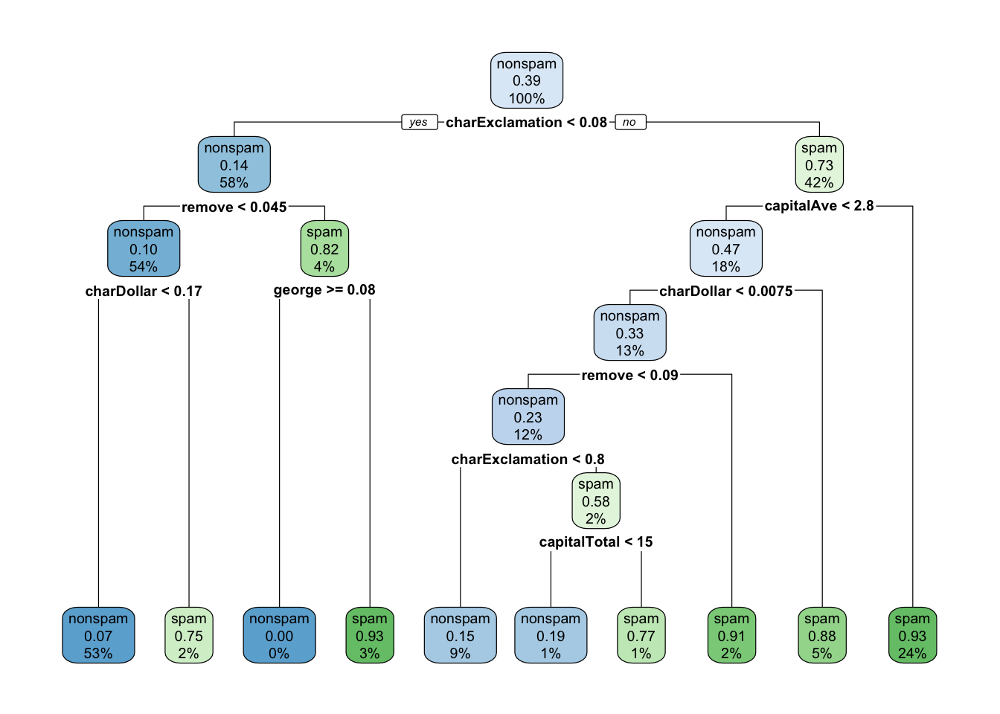
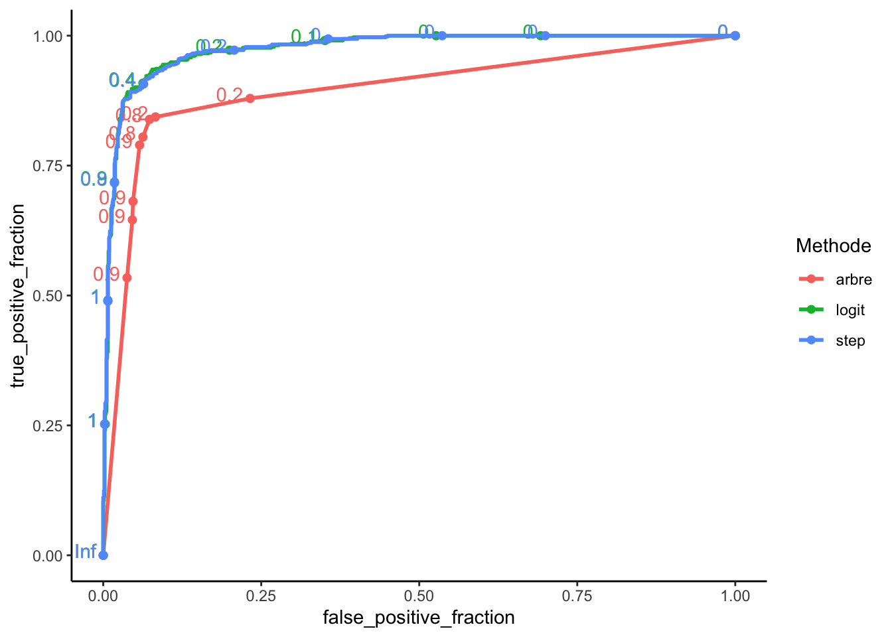

Chapitre 6 Faire de la régression sur R
Les problèmes de régression et de classification supervisée consistent à expliquer et/ou prédire une sortie \(y\in\mathcal Y\) avec
- \(\mathcal Y=\mathbb R\) pour la régression
- \(\mathcal Y\) de cardinal fini pour la classification supervisée,
par des entrées \(x\in\mathbb R^p\). Il s’agit donc de trouver une fonction \[m:\mathbb R^p\to\mathcal Y\] à partir de données \((X_1,Y_1),\dots,(X_n,Y_n)\).
Ces données sont souvent collectées dans un dataframe df de la forme
| \(Y\) | \(X_1\) | \(X_2\) | \(\dots\) | \(X_p\) |
|---|---|---|---|---|
| \(y_1\) | \(x_{1,1}\) | \(x_{1,2}\) | \(\dots\) | \(x_{1,p}\) |
| \(\vdots\) | \(\vdots\) | \(\vdots\) | \(\vdots\) | \(\vdots\) |
| \(\vdots\) | \(\vdots\) | \(\vdots\) | \(\vdots\) | \(\vdots\) |
| \(y_n\) | \(x_{n,1}\) | \(x_{n,2}\) | \(\dots\) | \(x_{n,p}\) |
Le protocole pour construire un algorithme de régression sur R est toujours le même. Il faut spécifier :
- la méthode (ou l’algorithme)
- la variable à expliquer
- les variables explicatives
- le jeu de données
- les éventuelles options de la méthode considérée.
Par exemple la commande
method(Y~X1+X3,data=df,...)ajustera le modèle method pour expliquer \(Y\) par \(X_1\) et \(X_3\) avec les données dans df (les points représentent d’éventuelles options). Voici quelques exemples de méthodes :
| fonction R | algorithme | Package | Problème |
|---|---|---|---|
| lm | modèle linéaire | Reg | |
| glm | modèle logistique | Class | |
| lda | analyse discriminante linéaire | MASS | Class |
| svm | Support Vector Machine | e1071 | Class |
| knn.reg | plus proches voisins | FNN | Reg |
| knn | plus proches voisins | class | Class |
| rpart | arbres | rpart | Reg et Class |
| glmnet | ridge et lasso | glmnet | Reg et Class |
| gbm | boosting | gbm | Reg et Class |
| randomForest | forêts aléatoires | randomForest | Reg et Class |
Remarque: pour glmnet, on ne peut pas utiliser de formule de la forme Y~.. Il faut spécifier une matrice pour les \(X\) et un vecteur pour \(Y\). La fonction model.matrix peut se révéler très utile pour calculer la matrice des \(X\).
Puisqu’il existe un grand nombre d’algorithmes pour répondre à un même problème de régression, il est important de définir des critères de performance afin de les comparer. Ces critères sont généralement inconnus et doivent être estimés à l’aide de procédure de type apprentissage/validation ou validation croisée. On a souvent besoin d’utiliser la fonction predict pour calculer ces critères. Cette fonction est une fonction générique : on peut utiliser predict pour une régression linéaire, logistique, un arbre, une forêt aléatoire… Pour obtenir l’aide de cette fonction pour
- la régression linéaire : taper help(predict.lm)
- la régression logisitque : taper help(predict.glm)
- les régressions pénalisées : taper help(predict.glmnet)
- les arbres : taper help(predict.rpart)
- les forêts aléatoires : taper help(predict.randomForest)
- …
Dans la suite on suppose que \(\mathcal Y=\mathbb R\) et on considère le modèle de régression \[Y=m(X)+\varepsilon.\] La performance d’un estimateur \(\widehat{m}\) de \(m\) sera mesurée par son erreur quadratique de prédiction : \[E[(Y-\widehat m(X))^2].\]
6.1 Modèle linéaire : fonctions lm et predict
On considère le modèle de régression linéaire \[Y=\beta_0+\beta_1X_1+\dots+\beta_pX_p+\varepsilon\] où \(X_1,\dots,X_p\) sont les variables explicatives, \(Y\) la variable à expliquer et \(\varepsilon\) le terme d’erreur. On fixe \(p=5\) et on considère les données suivantes :
n <- 1000
p <- 5
set.seed(1234)
X.mat <- matrix(rnorm(n*p),ncol=p)
eps <- rnorm(n,mean = 0,sd=0.5)
df <- data.frame(X.mat,eps)
df <- df %>% mutate(Y=X1+X2+X3+X4+X5+eps) %>% select(-eps)Construire un modèle linaire permettant d’expliquer \(Y\) par \(X_1,\dots,X_5\) (utiliser la fonction lm) et afficher les estimateurs de \(\beta_0,\dots,\beta_5\) (on pourra utiliser les fonctions coef et summary).
mod1 <- lm(Y~.,data=df) coef(mod1) (Intercept) X1 X2 X3 X4 0.0228707 1.0111903 1.0000752 1.0034085 1.0071250 X5 0.9962842 summary(mod1) Call: lm(formula = Y ~ ., data = df) Residuals: Min 1Q Median 3Q Max -1.44876 -0.33840 -0.00769 0.33308 1.76883 Coefficients: Estimate Std. Error t value Pr(>|t|) (Intercept) 0.02287 0.01543 1.482 0.139 X1 1.01119 0.01550 65.258 <2e-16 *** X2 1.00008 0.01575 63.479 <2e-16 *** X3 1.00341 0.01524 65.829 <2e-16 *** X4 1.00712 0.01552 64.908 <2e-16 *** X5 0.99628 0.01589 62.702 <2e-16 *** --- Signif. codes: 0 '***' 0.001 '**' 0.01 '*' 0.05 '.' 0.1 ' ' 1 Residual standard error: 0.4872 on 994 degrees of freedom Multiple R-squared: 0.9556, Adjusted R-squared: 0.9554 F-statistic: 4279 on 5 and 994 DF, p-value: < 2.2e-16On considère le jeu de données test suivant.
m <- 500 p <- 5 set.seed(12345) X.mat <- matrix(rnorm(m*p),ncol=5) eps <- rnorm(m,mean = 0,sd=0.5) df.test <- data.frame(X.mat,eps) df.test <- df.test %>% mutate(Y=X1+X2+X3+X4+X5+eps) %>% select(-eps)Calculer, pour chaque individu de ce nouveau jeu de données, les prédictions faites par le modèle de la question précédente (utiliser la fonction predict avec l’option newdata).
pred <- predict(mod1,newdata=df.test) head(pred) 1 2 3 4 5 0.09630147 -1.25027415 -0.52549286 0.19569041 3.72923032 6 -5.79419545Créer un nouveau dataframe qui contiennent les valeurs prédites \(\widehat y_i\) à la question précédente sur une colonne et les valeurs observées \(y_i\) du jeu de données
df.testsur une autre colonne.pred.df <- data.frame(pred=pred,obs=df.test$Y)A l’aide du verbe summarize, calculer l’erreur quadratique moyenne (estimée) du modèle linéaire : \[\frac{1}{m}\sum_{i\in test}(\widehat y_i-y_i)^2.\]
pred.df %>% summarize(MSE=mean((pred-obs)^2)) MSE 1 0.2326355
6.2 Sélection de variables
On considère les données suivantes
n <- 1000
p <- 105
set.seed(1234)
X.mat <- matrix(rnorm(n*p),ncol=p)
eps <- rnorm(n,mean = 0,sd=0.5)
df <- data.frame(X.mat,eps)
df <- df %>% mutate(Y=X1+X2+X3+X4+X5+eps) %>% select(-eps)issues du modèle \[Y=\beta_0+\beta_1X_1+\dots+\beta_pX_p+\varepsilon\] avec \(p=105\). On remarquera que seules les variables \(X_1,\dots,X_5\) sont explicatives.
Ajuster un modèle linéaire (fonction lm) sur
dfet afficher les estimateurs de \(\beta_0,\dots,\beta_{105}\).mod2 <- lm(Y~.,data=df) summary(mod2)$coefficients %>% head() Estimate Std. Error t value Pr(>|t|) (Intercept) -0.01307274 0.01660197 -0.787421 4.312441e-01 X1 0.98461851 0.01656206 59.450240 7.137528e-313 X2 0.99625236 0.01668382 59.713691 3.032293e-314 X3 1.01858539 0.01628043 62.565035 0.000000e+00 X4 1.00691542 0.01643050 61.283315 2.371515e-322 X5 1.00752931 0.01718708 58.621324 1.561036e-308On propose d’utiliser une procédure de sélection de variables backward à partir du critère BIC. Effectuer cette procédure à l’aide de la fonction step (on pourra utiliser les options direction=“backward” et k=log(n)). On appellera ce modèle mod.step.
mod.step <- step(mod2,direction=c("backward"),k=log(n),trace=0) summary(mod.step) Call: lm(formula = Y ~ X1 + X2 + X3 + X4 + X5 + X29 + X69 + X74, data = df) Residuals: Min 1Q Median 3Q Max -1.63923 -0.34301 0.00179 0.32041 1.45661 Coefficients: Estimate Std. Error t value Pr(>|t|) (Intercept) -0.002413 0.015749 -0.153 0.87828 X1 0.992339 0.015807 62.777 < 2e-16 *** X2 0.991358 0.016097 61.588 < 2e-16 *** X3 1.010115 0.015562 64.907 < 2e-16 *** X4 1.006043 0.015830 63.552 < 2e-16 *** X5 1.008520 0.016242 62.093 < 2e-16 *** X29 -0.043358 0.015158 -2.860 0.00432 ** X69 0.042714 0.015292 2.793 0.00532 ** X74 -0.043792 0.016118 -2.717 0.00670 ** --- Signif. codes: 0 '***' 0.001 '**' 0.01 '*' 0.05 '.' 0.1 ' ' 1 Residual standard error: 0.4969 on 991 degrees of freedom Multiple R-squared: 0.954, Adjusted R-squared: 0.9537 F-statistic: 2571 on 8 and 991 DF, p-value: < 2.2e-16On a sélectionné un modèle avec 8 variables : les 5 explicatives et 3 variables de bruit.
Calculer les erreurs quadratiques de prévision \[\frac{1}{m}\sum_{i\in test}(\widehat y_i-y_i)^2\] des deux modèles (le modèle complet et le modèle sélectionné) en utilisant le jeu de données test suivant.
m <- 300 p <- 105 set.seed(12345) X.mat <- matrix(rnorm(m*p),ncol=p) eps <- rnorm(m,mean = 0,sd=0.5) df.test <- data.frame(X.mat,eps) df.test <- df.test %>% mutate(Y=X1+X2+X3+X4+X5+eps) %>% select(-eps)On met calcules les prévisions et on les met dans un
tibble:p.full <- predict(mod2,newdata=df.test) p.step <- predict(mod.step,newdata=df.test) pred.df <- tibble(full=p.full,step=p.step,obs=df.test$Y)On en déduit les erreurs quadratiques moyennes :
pred.df %>% summarize(MSE.full=mean((full-obs)^2),MSE.step=mean((step-obs)^2)) # A tibble: 1 × 2 MSE.full MSE.step <dbl> <dbl> 1 0.300 0.254 #ou pred.df %>% summarize_at(1:2,~(mean((.-obs)^2))) # A tibble: 1 × 2 full step <dbl> <dbl> 1 0.300 0.254
6.3 Régression logistique et arbre
On considère le jeu de données spam disponible ici
library(kernlab)
data(spam)Le problème est d’expliquer la variable type (un email est un spam ou non) par les 57 autres variables.
Séparer les données en un échantillon d’apprentissage
dappde taille 3000 et un échantillon testdtestde taille 1601. On pourra utiliser la fonction sample.set.seed(4321) perm <- sample(nrow(spam),3000) dapp <- spam[perm,] dtest <- spam[-perm,]Construire un modèle logistique permettant de répondre au problème en utilisant uniquement les données d’apprentissage. On utilisera la fonction glm avec l’option
family="binomial".m.logit <- glm(type~.,data=dapp,family="binomial")A l’aide de la fonction step, effectuer une sélection backward (ça peut prendre quelques minutes).
m.step <- step(m.logit,direction="backward",trace=0)A l’aide de la fonction rpart du package rpart, construire un arbre de régression (toujours sur les données d’apprentissage) pour répondre au problème. On utilisera les paramètres par défaut de la fonction.
library(rpart) arbre <- rpart(type~.,data=dapp)Visualiser l’arbre construit à l’aide des fonctions rpart.plot et visTree des packages rpart.plot et visNetwork
library(rpart.plot) rpart.plot(arbre)
library(visNetwork) visTree(arbre)Pour les 3 modèles construits (logistique, backward et arbre) calculer les prédictions de la variable
typepour les individus de l’échantillondtest. On pourra regrouper ces prévisions dans un data-frame à 3 colonnes.prev <- data.frame( logit=predict(m.logit,newdata=dtest,type="response") %>% round() %>% recode_factor(`0`="nonspam",`1`="spam"), step=predict(m.step,newdata=dtest,type="response") %>% round() %>% recode_factor(`0`="nonspam",`1`="spam"), arbre=predict(arbre,newdata=dtest,type="class"))Ajouter au data-frame précédent une colonne où on mettra les valeurs observées de la variable à expliquer.
prev1 <- prev %>% mutate(obs=dtest$type)A l’aide de summarize_at calculer les erreurs de classification des 3 modèles.
prev1 %>% summarize_at(1:3,~(mean(obs!=.))) %>% round(3) logit step arbre 1 0.07 0.074 0.109Représenter les courbes ROC et calculer les AUC. On pourra consulter les pages 346 et 347 dans Cornillon et al. (2018) pour le tracé de courbes ROC sur R.
score <- data.frame( logit=predict(m.logit,newdata=dtest,type="response"), step=predict(m.step,newdata=dtest,type="response"), arbre=predict(arbre,newdata=dtest,type="prob")[,2]) %>% mutate(obs=dtest$type) %>% pivot_longer(-obs,names_to = "Methode",values_to="score")library(plotROC) ggplot(score)+aes(d=obs,m=score,color=Methode)+geom_roc()+theme_classic()
score %>% group_by(Methode) %>% summarize(AUC=as.numeric(pROC::auc(obs,score))) %>% mutate(AUC=round(AUC,3)) %>% arrange(desc(AUC)) # A tibble: 3 × 2 Methode AUC <chr> <dbl> 1 logit 0.975 2 step 0.975 3 arbre 0.894